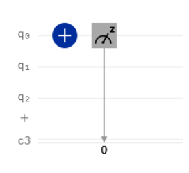
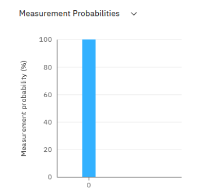
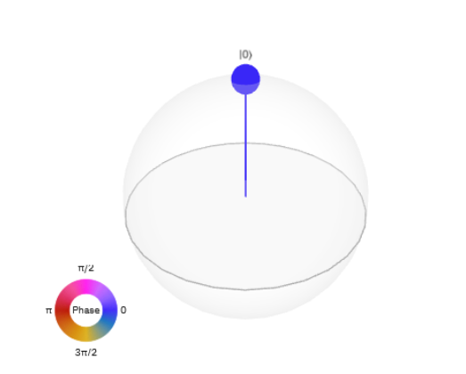

Quantum Circuits on IBMQ¶
Let’s look at how quantum circuits are represented. A quantum circuit will usually have both qubits and classical bits. For this section, we’ll be using the IBMQ Quantum Composer. This is the drag and drop circuit editor that we will be using as a ‘plugin’ to some later projects. For now, though, go ahead and explore the full circuit composer.
You’ll need to create an account to use the IMBQ platform but it’s very easy! Follow the instructions that your instructor provides.
Qubits are represented as q_0, q_1, q_2, etc. The circuit shown below has three quantum bits and once classical bit c3. Each qubit has a ‘wire’ on which gates can be placed.
The gate that is place on a qubit wire acts on that qubit specifically. In this case, we have a NOT or X gate acting on qubit q_0. The X gate is represented with a plus sign pretty much everywhere, so I’m introducing it here to help you get used to it.

The square with z in it at the end represents measurement. At the end of the circuit, the states are measured and we will get either 0 or 1 as a result in our classical bit c3 since we are measuring in the and
basis. If we repeat the circuit many times, we will get outcome statistics: for x% of the time we will get an outcome of 0 and for y% of the time we will get an outcome of 1.
These are also displayed to you in the measurement statistics bar:

The state of the system is also represented on the Bloch sphere. This can get really complicated for more than one qubit, but it’s nice to take a look and see what is going on!

If you want to spend some more time learning the ropes, check out the documentation here.
For those interested in computer science, you can take a look at the code being generated by your actions by clicking the <>code tab, in the upper right corner.
Otherwise, let’s get started building some circuits!